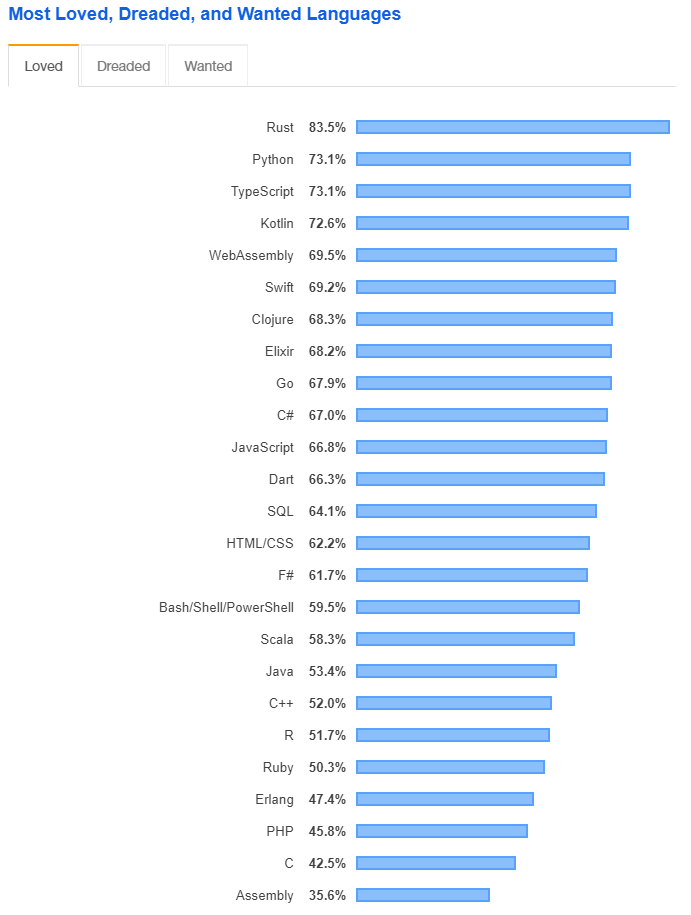

Agenda
- History of Kotlin
- Why Kotlin?
- Code
- val / vars
- classes
- Java interop
- nullability
- extension functions
- Summary
- Bonus: Puzzles

Stack Overflow Developer survey 2019
Why Kotlin?
- Interoperability with Java
- Java -> Kotlin
- Kotlin -> Java
- Less code to achieve the same functionality
- Rough estimates indicate approximately a 40% cut in the number of lines of code (Jetbrains)
- Useful features
- Null safety
- Extension functions
- Data classes
- Multi-paradigm
- Object oriented
- Functional
- You decide what works for you!
Kotlin is in itself a polyglot language. It brings together the powerful capabilities from many different languages. The creators of Kotlin took the good parts from various languages and combined them into one highly approachable and pragmatic language.
- Venkat Subramaniam